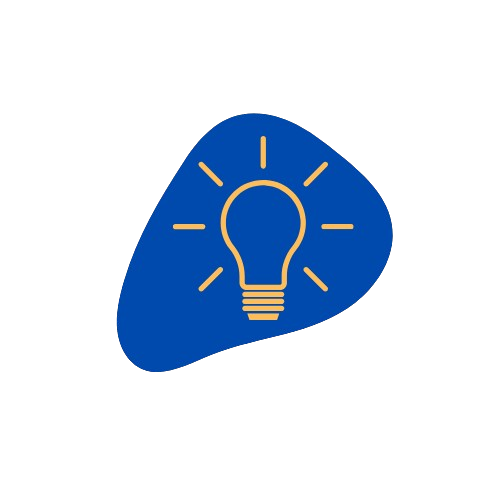

PRIORIDADES
Las áreas funcionales de Fini operan de forma colaborativa para impulsar una empresa en constante expansión. Liderar a través de una visión compartida, permite trabajar en equipo, desarrollar a las personas en línea con los valores y competencias y afrontar los retos futuros.

FINI I+D: INNOVACIÓN Y DESARROLLO
La innovación es un valor clave para Fini. Nuestra apuesta por invertir e investigar constantemente nos lleva a lanzar productos de excelencia al mercado. Este afán por evolucionar y adquirir valores diferenciales en nuestros productos y procesos permite que Fini siga conduciendo y participando en proyectos de investigación y desarrollo además de colaborar con institucionesalineadas con este propósito
Lanzamiento de +50 nuevas referencias cada año
ACCIONES MEDIOAMBIENTALES
AMPLIACIÓN DE EDARI
Proyecto de ampliación de la depuradora (EDARI): En 2022 se inició un estudio para la ampliación, actualmente, se ha presentado toda la documentación medioambiental necesaria ante la comunidad autónoma correspondiente.

DESARROLLO EN LOGÍSTICA INVERSA
En Brasil, se ha implementado la logística inversa en la cadena de suministro, un proceso que implica la planificación y control del retorno de productos de los consumidores hasta el fabricante.
ACCIONES SOCIALES
"EL ÁRBOL DE LOS SUEÑOS"
Una iniciativa solidaria promovida por Caixabank para que miles de niños en riesgo de exclusión social pudieran recibir su regalo de Navidad durante la noche más mágica del año.
"COLABORACIÓN ASTRADE"
Donación de productos a personas con Trastorno Generalizado del Desarrollo a través de la colaboración con ASTRADE.